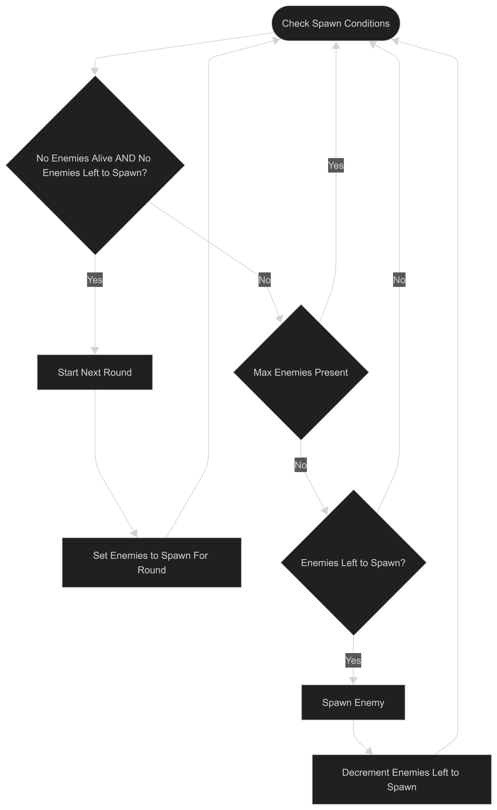
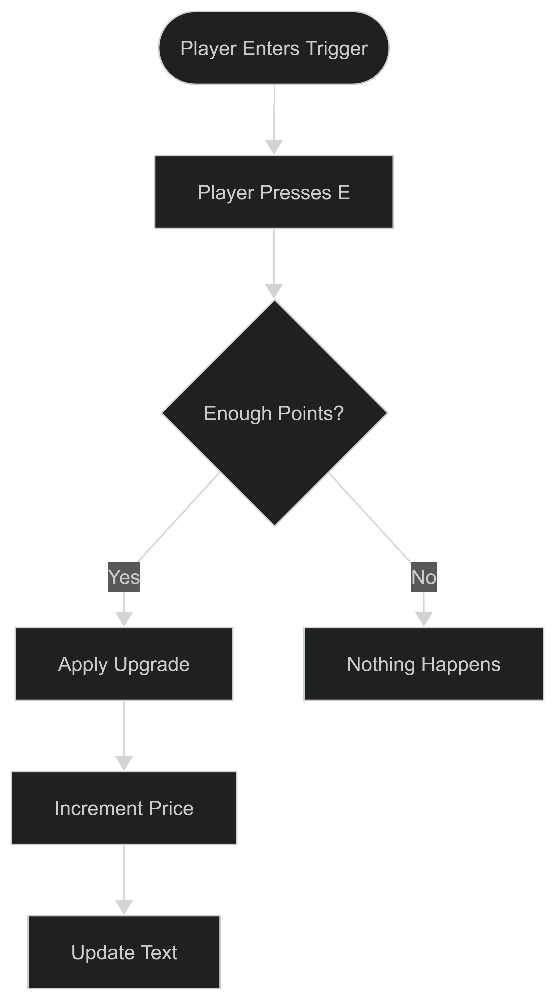

Twin Stick Zombies
Twin Stick Zombies is a 3D Twin Stick Shooter Survival game created in Unreal Engine using Unreal Blueprints. Twin Stick Zombies was created for an assignment for RRC Polytech's Game Development program. For this assignment we followed Epics twin stick shooter tutorial and then added our own spin on the genre. These additions are inspired by the Zombie modes in Call of Duty. Important to note that the game is unfinished and is simply a prototype of the newly added mechanics.
Project Overview
- Role: Gameplay Designer and Programmer
- Engine: Unreal Engine
- Team Size: Solo project
- Genre: Twin Stick Shooter Survival
- Pitch: Survive endless hordes of zombies.
My Contributions
- Round Based Wave System
- Upgrade and Currency System
- Ammo System
Design Breakdown
Round Based Wave System
Enemies spawn in waves with the amount of enemies to spawn and their strength dependent on the current round. Higher rounds result in stronger and more enemies.
Design Goals
Create a gradually increasing challenge to keep players engaged.
Inspiration
In Call of Duty: Zombies, zombies spawn in rounds. Each round the number of zombies increase with a max amount that can be in the field at a single time.
System Design
The player fights enemies as they spawn.

A new round starts and enemies begin to spawn again.

Implementation
Whenever spawn enemy is called a series of checks are performed to determine if another enemy should be spawned or if the next round should start. The process can be seen in the following chart.

Upgrade and Currency Systems
Players earn points by killing enemies. These points can then be spent on upgrades to health and damage, as well as, buying more ammo. When an upgrade is purchased the price increases to create a simple scaling progression system that prevents the player from becoming overpowered and thus keeping the game interesting.
Design Goals
To balance the ever increasing challenges of the rounds system, players have access to health and damage upgrades. Players purchase these upgrades by spending the points they earned by killing enemies.
Inspiration
In Call of Duty: Zombies, players earn currency when defeating zombies. Players can then use this currency to buy upgrades that affect various parts of the gameplay.
System Design
Player spends points at a stand to increase an attribute such as health or damage.

After each purchase the price increases, limiting how quickly player can increase their strength.
Implementation
Each upgrade stand consists of three main components: a static mesh representing the stand itself, a collision trigger used to detect if the player is within interaction range, and a text render to display the current price of the upgrade and which upgrade the stand is for.
The collision trigger handles enabling and disabling player interaction with the stand. If the player is enters the trigger, the stand will enable input and allow purchasing of the upgrade. If the player exits the trigger area, the input is disabled thus blocking the purchase of upgrades.
If the stand input is enabled, player can press the E key to begin the purchase process. The process first checks if the player has enough points to buy the upgrade. If enough points are available, the cost is deducted from the players points total and the upgrade is applied.
After a purchase is successfully made, the price of the upgrade is doubled and the text render is updated to display the new price. Increasing the price after each purchase creates a simple scaling progression system that prevents the player from becoming overpowered and thus keeping the game interesting.

Post Mortem
What Went Well
Going into the project I was nervous about working with Unreal Engine and the Blueprint system since I had never done visual scripting before, but honestly everything went pretty smoothly. The additional mechanics were easy to implement with Blueprints and worked as I wanted them to for the scope of this project.
Challenges
There were no major challenges I faced during development. The few challenges I faced were due to being unfamiliar with Unreal Engine and the tutorial videos being in an older version of Unreal Engine. However, I was able to solve these problems fairly easily. When it came to adding the additional features no challenges were faced.
What I Learned
Throughout this project I was able to gain a greater understanding of how Unreal Blueprints works and how to use Unreal Engine better as a whole.
Future Improvements
If development were to continue I would want turn this prototype into a complete game. In its current state the game is very much so a prototype as the game does not end and there is no real end. I would add an objective besides just survive. This objective would be similar to the easter eggs that are present in most of the Call of Duty: Zombies maps. Next I would want to make the world, enemies, and player more visually intereting using fab assets. Finally, I would change how the enemies spawn. In its current state the enemies sometimes spawn on top of the stands which should not happen.